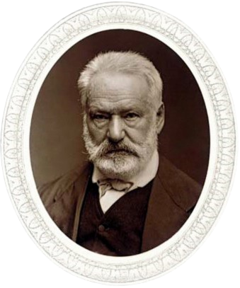

Victor Hugo
Demain, dès l’aube, à l’heure où blanchit la campagne,
Je partirai. Vois-tu, je sais que tu m’attends.
J’irai par la forêt, j’irai par la montagne.
Je ne puis demeurer loin de toi plus longtemps.
Je marcherai les yeux fixés sur mes pensées,
Sans rien voir au dehors, sans entendre aucun bruit,
Seul, inconnu, le dos courbé, les mains croisées,
Triste, et le jour pour moi sera comme la nuit.
Je ne regarderai ni l’or du soir qui tombe,
Ni les voiles au loin descendant vers Harfleur,
Et quand j’arriverai, je mettrai sur ta tombe
Un bouquet de houx vert et de bruyère en fleur.